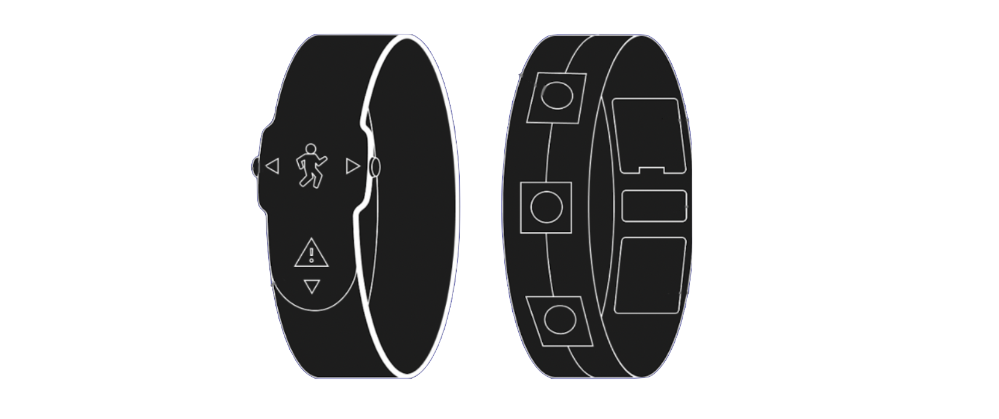

Embracelet
Project Overview
This project showcases my group involvement in the Media Technology and Interaction Design course at KTH. The project centered around the principles of interaction design to create a captivating and user-centered interactive experience. With increasing incidents occuring in the crowds at concerts and festivals, our aim was to create an interactive bracelet for escaping crowds in these settings.
My Contributions
Collaborating closely with my team members, I actively participated in every stage of the process, from user interviews and brainstorming sessions to user testing, prototyping, and showcasing. I brought forth concepts and ideas considering user needs and technological possibilities. I actively engaged in user testing, gathering valuable feedback to iteratively refine the bracelet's functionalities based on user insights.